DOTs for Dummies
Start here before installing anything. This introduction assumes no DOT knowledge. It explains what the pieces mean and how they work together. When you are ready to try them, continue with DOTs in Action, the hands-on walkthrough.
What problem do DOTs solve?
Imagine building a monitoring system. Node Exporter supplies measurements, Prometheus collects them, and Grafana displays them. Each tool has its own way to start, its own configuration and its own interfaces. To make the system work, you need to choose compatible interfaces and tell each tool how to reach the others.
DOT-Design gives these tools a common description. A DOT (Dynamic Open Trust
component) describes one tool release: what it can do, how it can run, and which
interfaces it provides or requires. You keep that reusable description in
dot.json. The tool keeps its native deployment mechanisms and APIs.
A separate composition selects the instances you want to run together and
describes their connections and configuration in composition.yaml.
The dotx command reads these descriptions to validate, inspect and deploy your
selection. You can reuse the same DOT in several compositions.
How the pieces fit together
Use Prometheus to connect the main model names:
-
Capabilities (
skills). Prometheus declares abilities such as metrics scraping. -
Interfaces (
contractsandanchors). The rootcontractslist declares owned interface specifications;anchorsnames integration points that provide or require operations. An Anchor can refer to an owned Contract or one from another DOT. -
Where it runs. A Runtime’s
platformidentifies an engine such as Docker or Kubernetes. Itsdeploymentsare alternative ways to launch that release. -
What runs together. The chosen deployment’s
servicesdescribe the logical services, ports and configuration.anchorBindingsconnects an Anchor to a named service port. -
Connections between tools. A composition selects one deployment per instance and connects compatible provided and required Anchors through Wires. A Wire’s materializer supplies the selected endpoint in the consumer’s configuration.
For example, Node Exporter provides a metrics Anchor and Prometheus requires a scrape target. A Wire connects those integration points; Prometheus then makes HTTP requests to collect the measurements. A second connection lets Grafana query Prometheus. The application performs the requests; the DOTs and composition describe the interfaces and configuration needed for them.
You do not need Java knowledge, a running service or a complete understanding of every field to begin. Read the four ideas below, then use the remaining sections as a reference while following the practical lessons. By the end, you should be able to trace an interface from its Contract through an Anchor to a service port, and explain what a composition adds.
Keep four ideas in view
| Idea | In the monitoring exercise |
|---|---|
DOT: describe a tool once |
Prometheus has one release identity and reusable deployment/interface declarations. |
Deployment: choose how one instance runs |
Start with Docker Compose; choosing it does not launch the other alternatives. |
Anchor: name an Integration Point |
|
Composition: connect instances through Wires |
Prometheus requires a metrics source; Node Exporter provides it. The Wire supplies the selected endpoint through configuration. |
Read the model map below first. The remaining sections explain the names you will meet in the files; return to them as each lesson introduces a field. You do not need to memorize the complete class model before running your first DOT.
Start with the models
DOT-Domain is the source of truth for the portable models. It defines the
building blocks and their validation rules in Java. The project generates JSON
Schemas and CLI input types from those models. You author JSON or YAML and use
the dotx binary; Java is not required to use the CLI.
Two documents organize the work:
-
dot.jsondescribes one tool release: its capabilities, interfaces and supported deployment alternatives. -
composition.yamldescribes one use case: selected tool instances, connections and instance-specific configuration. Composition is also a DOT-Domain model.

Dot leads to the reusable product definition; Composition leads to instances
and Wires that reference those definitions. These arrows describe model
relationships, not network packets. Wires connect the selected DOTs' Anchors.
See the core class relationships

Diamonds indicate embedded values; arrows indicate declarations or references.
The dashed arrow applies to Contract-backed Anchors. Field lists, collection sizes,
configuration, ports, binding helpers and audit metadata are omitted for
readability; see the full generated class diagram
for implementation detail. Composition is a separate DOT-Domain aggregate:
its instances reference DOTs and its Wires reference their Anchors.
The sections below explain the main families. The complete model reference documents every public type and field, including advanced options.
Describe a tool: identity, capabilities and audit information
A DOT is a reusable definition of a component. Here, Prometheus@3.15.1
identifies the actual Prometheus release, independently of the CLI release.
One release definition can offer several deployments. Another supported tool
release has its own exact definition.
This is a JSON fragment, taken from the compact canonical Prometheus example:
{
"id": "Prometheus@3.15.1",
"name": "Prometheus",
"version": "3.15.1",
"skills": [{"id": "Metrics-Scraping"}]
}| Model or field | Meaning |
|---|---|
|
The product’s identity, readable name and actual tool release. |
|
A named capability, such as metrics scraping. A DOT references at least one meaningful Skill by ID; a capability label does not establish API compatibility. |
|
An explanation and open classification labels. |
|
Definition audit timestamps: |
The fragments on this page explain selected relationships; they are not complete deployable documents. See the complete Prometheus JSON example to read all the required fields together. Lesson 2 creates and validates your own private learning definition without changing the catalogue.
Describe an interface: Contract, Payload and Anchor
A Contract documents an interface in a supported machine-readable standard: OpenAPI for HTTP operations, AsyncAPI for messaging operations, Protobuf for service methods, GraphQL for schema fields, or the supported SPARQL query profile. Each standard has a bounded supported profile; selecting its name does not mean every feature of that standard is executable.
The Prometheus Contract has ID Prometheus@3.15.1::OpenAPI::HTTP. Its version
is 3.1.0, the OpenAPI document version. The tool release remains 3.15.1.
format: YAML describes how the specification bytes are encoded.
The shared Payload value contains a raw HTTPS url and a sha256 digest.
The CLI downloads and verifies those exact bytes, or checks its verified cache.
This URL identifies the specification document; it is not the running API
address. A digest verifies integrity, not publisher authenticity or live behavior.
Prefer release-matched official specifications and retain their provenance.
An Anchor is a named Integration Point. It gives a useful interface a
DOT-local name and declares whether this tool PROVIDES or REQUIRES it.
For a Contract-backed Anchor, the selector identifies the operation inside the
verified specification:
{
"id": "build-information",
"name": "build-information",
"role": "PROVIDES",
"contract": {
"id": "Prometheus@3.15.1::OpenAPI::HTTP",
"selector": "#/paths/~1status~1buildinfo/get"
}
}Read this as: “Prometheus provides build information through this selected
OpenAPI operation.” ~1 encodes / in the JSON Pointer. The selector is separate
from the Contract ID; an Anchor contains no running host, port or password.
Root Dot.contracts holds complete declarations owned by that tool release.
An Anchor requiring another tool’s Contract names its exact originating DOT
through contract.source; the consumer does not copy the producer’s Contract.
The model also supports a provider-neutral requirement profile, initially OIDC
discovery, and explicit contractless communication boundaries. Those modes do
not create a verified Contract where none exists. See
Anchor authoring for their distinct validation rules.
Describe execution: Runtime, Platform, Deployment and Service
These models answer different questions:
| Model | Question | Prometheus example |
|---|---|---|
|
On which engine can it run? |
A Docker Runtime has |
|
Which supported deployment alternative should this instance use? |
Choose the exact ID |
|
What native specification deploys it? |
|
|
Which logical services does that deployment materialize? |
Service |
|
Where does a provided interface become reachable? |
Named port |
A single Runtime may contain several compatible deployment mechanisms. Selecting
one deployment does not launch all the alternatives. The selected dot.json
contains the references and declarations needed for deployment; a neighbouring
Compose file or Dockerfile is not an implicit input.
This service fragment completes the connection between the logical Anchor and its implementation:
{
"id": "prometheus",
"ports": [{"name": "http", "protocol": "HTTP", "port": 9090}],
"contracts": [{"id": "Prometheus@3.15.1::OpenAPI::HTTP"}],
"anchorBindings": [{"anchorId": "build-information", "port": "http"}]
}Follow the chain: Contract operation → Anchor → service binding → named
port. The deployment supplies the implementation. A published host port such as
18909 is an instance-facing choice; it is not the service’s 9090 port.
The service’s Contract list contains ID-only references; the complete owned
declaration stays at the DOT root.
Describe configuration where it belongs
Each service owns a DeploymentConfig: supported environment variables,
configuration-file paths and volume mounts. A multi-service DOT gives each
service its own configuration and bindings.
The reusable definition declares supported inputs and any allowed defaults.
For example, Prometheus accepts a scrape configuration file. Your monitoring
composition supplies the targets and labels for that use case. A file default
uses the same URL/hash Payload as a Contract or manifest; ordinary scalar
environment defaults remain strings.
Sensitive inputs are marked explicitly and supplied at execution time through
references such as secretRef. Do not embed passwords in reusable definitions,
public file payloads or locks. Required capabilities, host namespaces and CDI
devices are declarations that need explicit operator authorization and supported
bindings; describing them does not grant access.
Connect tools: Composition, DotInstance and Wire
A Composition selects exact definitions and one deployment for each named
DotInstance. In the tutorial, prometheus is an instance name while
Prometheus@3.15.1 is the product identity. You can select the same definition
for several distinctly named instances.
A Wire connects an Anchor that provides an interface to one that requires it. For the first monitoring connection:
node-exporter / node-metrics -> prometheus / scrape-target
PROVIDES REQUIRESA materializer writes the selected producer’s endpoint into a declared consumer input. Here it updates one target in Prometheus’s scrape file. The Wire supplies configuration; Prometheus implements the HTTP scrape. No automatic protocol translation or managed networking is implied.
Other Composition building blocks have specific jobs:
| Building block | Simple meaning |
|---|---|
Parameters and deployment inputs |
Values for this use case, service-specific environment/files/volumes and exact native workload bindings when needed. Secret references name credentials; resolved values remain execution concerns. |
|
Explicit startup dependencies. This is separate from the Wire’s interface relationship. |
Exposed Anchors |
Named interfaces selected for access, such as |
Wire probes and response assertions |
Bounded checks of supported operations and expected responses. A declaration or successful compatibility result alone does not prove a running interaction. |
Broker and external-gateway bindings |
Explicit transport endpoints or cross-runtime reachability supplied by the operator. They do not create extra Anchor Wires. Infrastructure remains operator-owned and is not adopted or deleted by the composition. |
The composition has a UUID used in ownership management. Its readable name and
version describe the use case; they are separate from product identities and
tool releases. A new UUID alone does not resolve resource or port collisions.
apiVersion and kind identify the Composition document format; they are
separate from its use-case version, the tool releases and the CLI release.
Understand the workflow and its evidence
| Step | What it establishes |
|---|---|
Author and validate |
The document satisfies the applicable generated shape and semantic/resolution checks. Validation does not start a service. |
Inspect and view topology |
The resolved declarations, deployments and interface relationships you selected. A topology is not live status. Compatibility may be incompatible or unresolved; an unknown result must not be treated as verified. |
Create and review a lock |
|
Preview, then apply |
A dry-run previews execution. Apply performs runtime operations using the selected deployment and supported grants; its success still needs live checks. |
Check status and verify |
Status reports recorded lifecycle observations. Actual API calls or probes establish only the specific interactions and assertions exercised. |
Destroy and check cleanup |
Remove the run’s owned resources using its original context. Preserve the original files, cache, binary and ownership records until cleanup succeeds. Never adopt unknown resources or broadly prune shared infrastructure. |
Linux amd64 and the supported single-host execution profiles are the baseline. Cross-runtime examples need explicitly prepared reachability. Stateful upgrades, recovery, production security and broader interface coverage need their own acceptance; a valid DOT is not a production certification.
Know the project components
| Component | Responsibility |
|---|---|
DOT-Domain in DOT-Design |
The portable Java models, validation rules and generated JSON Schemas. |
DOT-CLI |
The Go |
The version-controlled catalogue: |
|
DOT-Docs and DOT-Testing in DOT-Design |
Antora guides/reference and executable conformance/live test harnesses. Test fixtures and source-adapted components are labelled separately from real producer acceptance. Models, schemas, CLI behavior and tests have distinct roles. |
You can use the CLI and catalogue without building the development workspace. Follow one matching binary/catalogue set in the lessons. Repository access, network availability and a verified cache are prerequisites, not model fields. No mandatory registry is required for this catalogue-based route.
Check your understanding
Before moving on, locate these relationships in the diagram:
-
The DOT references a Skill, owns Contracts and contains Anchors and Runtime alternatives.
-
A Runtime targets a Platform and contains Deployments; each Deployment has a manifest and logical Services.
-
A provided Anchor selects an operation and is bound to a Service’s named port.
-
A separate Composition references DOT instances and connects Anchors through Wires.
Try explaining the Prometheus example in one sentence
“This DOT describes Prometheus 3.15.1, identifies its metrics capability and
digest-pinned API specification, names a build-information Integration Point, and offers a Docker
Compose deployment whose service implements that interface on the http port.”
The composition will later choose its peer tools, connection configuration and
instance-specific inputs.
For details, use the model reference, the architecture guide and Anchors and Composition. You can return to them as each exercise introduces a concrete field.